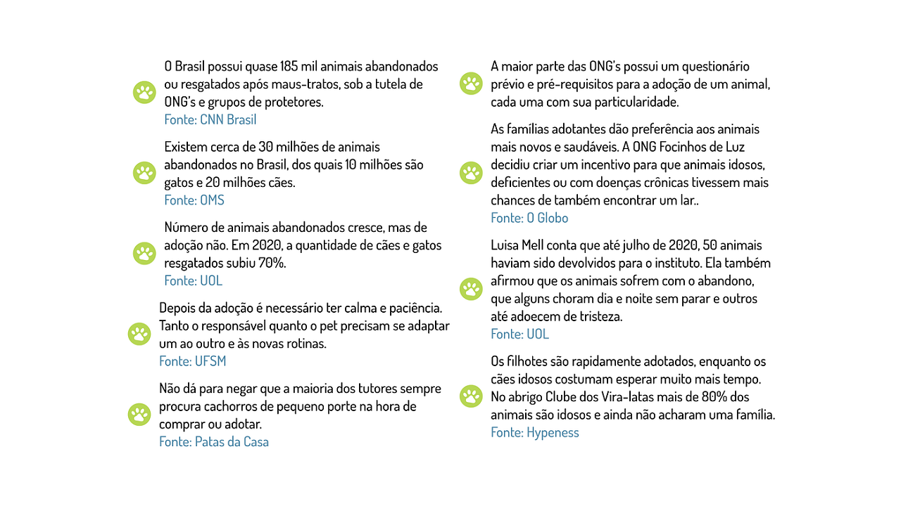

Início
Sobre
Projetos
Voluntariado
Doações
Transparência
Contato
Blog

Prestação de Contas e Impacto
Acompanhe como os recursos são aplicados em nossos projetos e ações.
Distribuição de Recursos por Projeto
Evolução de Voluntários
Impacto Social por Região